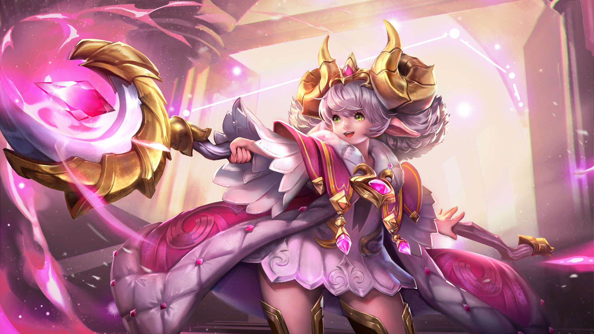
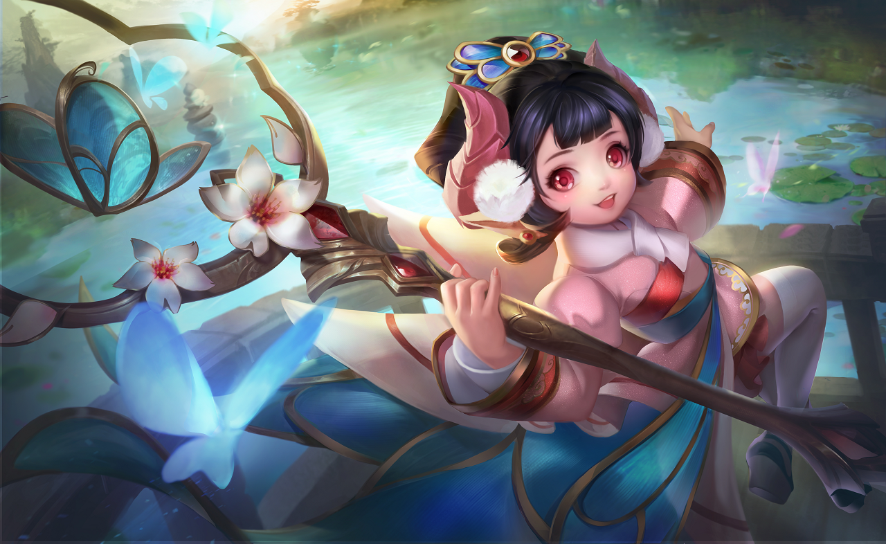
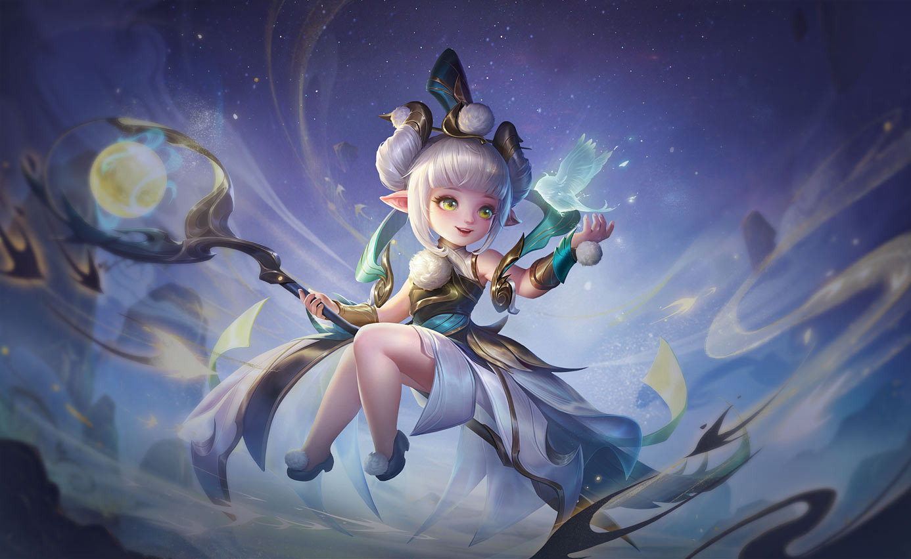
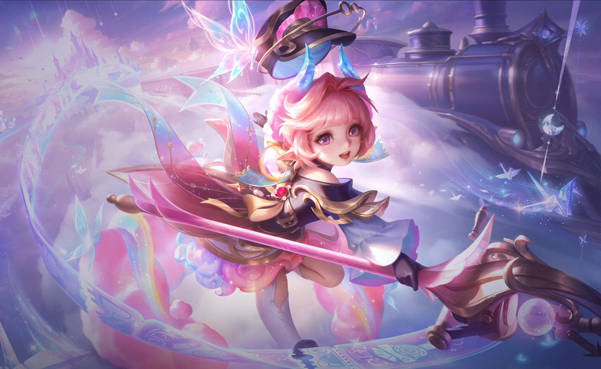

Trang Phục



Kỹ Năng
Bước chân thần tốc
Nội tại: Sử dụng một kỹ năng sẽ tăng tốc chạy trong 1 giây.
Alice – Tiểu Thần Tiên
Alice cũng từng giống như những đứa trẻ khác, yêu thích sự hồn nhiên và vô tư đùa nghịch. Nàng yêu từng góc nhỏ đầy phép thuật của khu vườn thần tiên cho nên các bậc trưởng bối đã đem nhiệm vụ canh giữ nơi này giao cho nàng.
Alice không phụ kỳ vọng của mọi người, nàng đã dùng sự lanh lợi và năng lượng tinh nghịch của mình để đoàn kết toàn bộ các sinh vật nhỏ bé của khu vườn lại thành một sức mạnh vui nhộn đáng gờm. Những sinh linh thuộc phe thần tiên nói thật là đủ mọi hình thù kỳ lạ, thể loại nào cũng có, thậm chí cũng có cả những sinh vật bé bỏng nhưng vô cùng gan dạ nữa. Dưới sự dẫn dắt của Alice, lực lượng bảo vệ khu vườn đã chiến đấu lém lỉnh và đẩy lùi thế lực hắc ám đang lăm le quấy phá.
Sau cuộc chiến, Alice quay về thế giới mộng mơ và lại tiếp tục sinh hoạt vui vẻ, sống cuộc sống hồn nhiên của loài thần tiên. Tuy nhiên nàng cũng đã trưởng thành lên không ít đồng thời cũng phải học cách gánh vác nhiều trách nhiệm. Cho đến nay dù Alice đã trở thành niềm yêu mến, sự ngưỡng mộ của mọi người nhưng cô vẫn luôn lan tỏa tiếng cười, mang lại niềm vui và canh giữ cho sự bình yên, không để cho kẻ xấu tác oai tác quái quay lại xâm chiếm khu vườn.